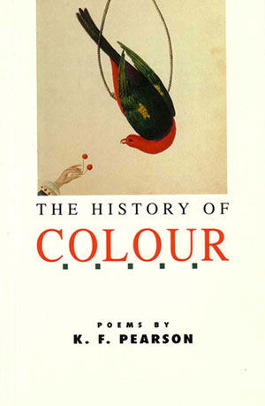

|
|


The History of Colour : K.F. Pearson
{kind=link}

{kind=link}
| ....intensely focused,
controlled and commanding; his
language is enlivening and his vision lush. Heather
Cam, The Sydney Morning
Herald
.....makes readers enjoy - and ask more of - their own awareness of what is around them. Norman
Talbot, The
Newcastle Herald |
Book Description
She is complete
and in her beauty’s complete.
That which is outside her face’s beauty
is less than the sum of beauty.
and in her beauty’s complete.
That which is outside her face’s beauty
is less than the sum of beauty.
Above all a resourceful shape-shifter, the South Australian poet K.F. Pearson keeps trying, and succeeding with, different modes and pitches of poetry. From imitations of Polynesian chant and Arabic ghazal to a delicious satire on applying for funding, from auto-biographical sketches to highly worked portraits, and equally in richly rewarding examples of that intense meditation on particulars which tests a good poet by being so well-worked a field, Pearson displays a versatility and a freshness well worthy of the abundant life in his chosen topics.
Published 1991 (Angus & Robertson)
ISBN 0207169276
78 pgs
$15.95
Book Sample
Leaf and Context
I’ll not number the streaks of the tulip
but tell of the fall from an ornamental vine of a tattered red leaf that stops with a faint percussion on a brown treated-pine table in a redbrick-paved backyard at eight on a
crisp ironical morning.
It rocks a little and is torn at the edge but eventually’s still, outstandingly red, a bright terracotta flag of itself in the early filtered sun. Its garden world is largely green. A spot, a sash, a dab, deliberate splash of the other amidst the greens and occasional greys of the formally disposed tree trunks of
the yard.
Here’s contrast so remarkable a blindwoman walking past would hear a song, perhaps An die ferne Geliebte or And the band played ‘Waltzing Matilda’, but today, and now, there’s also incipience, fall to grace of an individual leaf singled out from its neighbours to turn firstly in its colours and drop battered by wind and by rain from its vine, reader, to come as we all
do
to lie on a table alone.
And few so fortunate as to signallike this bright terracotta wonder, casually while a bespectacled bearded man empties a china teapot, new and resurgent life to a tribe. Its red daub blazes ‘autumn’. A single leaf originates a season.
Horizon Walker
The long articulate horizon out at sea is at the full extent the eye can reach. The tight-rope walker under canvas steps steady with a balance pole along a wire. An ancient scribe put down a gospel once: a lean man walked on a fisherman’s sea. But now there looms up small against the sky a human with a balance pole who steps an unsure sea.
A Woman on the Shore
Standing on the shore, an electrically stormy night she is one who has
gained the horizon,
illuminated flash of a line at sea
that goes into the dark
at the cease of distant lightning but will alwaysreturn, perhaps in
the calmer moments,
seated on a bus for a journey of two hours, to her as an image of arrival yet to come,
or which has been, and will recur:
the decision of the wire of a cutter
through a cheese,the steadiness of gaze that splits the world apart, St Anthony in the desert who knew he was alive. Now that she has gained the horizon in her sight there is no turning back to the time before the light. | The Particular Orchid
Among the nineteen in
their terracotta pots
an orchid blazes its
distinction by the carriage of its head:
see, the way its inward red bleeds into its beigey centripetal cup
flagrantly held up and open but shaded by the cover of its equalbeige and slightly pursed curved lips of its carolla. It is a gentle breathing nonpariel amongst a world
that settles its aesthetics by comparison alone.
And alone among the
nineteen nurtured orchids is the orchid.
A Drum this Time
Many things and many manner of things will be made in a life. In the city, an afternoon in his long studio, a man, Hossein Valamamesh, master sculptor, has fashioned an ‘ancient’ drum, kangaroo skin stretched tight across a hollow black glaze ceramic base shaped like a vase inverted on a vase, the downward vees of the taut skin’s handkerchief hem being gripped by upward vees of rope rising from a many stranded Empire-line-height waist of rope where no knot shows, invisible security that makes music when the hide is tapped with your fingers, lightly or loud. Many things and many manner of things and some, invisibly secure, pleasing to the eye, house internal music.
Late Summer Ripener
On a table cleared of debris an object is wholly possible. You walk the length of your garden and return with a plump guava. Laid down, the tiny knob of fruit startles the table and you with time. On your table in strenuous sunlight it’s the season of purple guava.
Summer Night
The rataplan-creak stop-start of cicadas
drums with its heat in his
ears as he waits,the person who squats
within you,
and adjusts for the nestle
of the
shined brass base
at the end of the butt to his shoulder,
and caresses the guard, and
caresses the guard, and inserts
his finger in around the concave trigger
and takes up its slack
with
the lightest of pressure,
and the rataplan-creak of cicadas has entered your night. |
A Vaselined Oyster and a Serenade to Lace
Penelope Nelson
Quadrant, Vol. 36, No. 5, 1992
KF. Pearson’s blurb describes him as ‘a resourceful
shapeshifter’, a phrase which dares the reviewer to try and
pin
him down. ‘From imitations of Polynesian chant and Arabic
Ghazal
to a delicious satire on applying for funding...’ Yes,
funding
applications again...
The poem... can be read as reflections on love-making, poetry, or even the mandolin...
Pearson’s lines are spare, polished and sophisticated, as befits a sharp-shooting shape-shifter. His concern for the aesthetic, for colour, shadows and spaces between things may be seen in many of the poems. Red, the accent colour of the cover, is absent from the tropical landscape of ‘Travel to an Island’ until the High Stepping Wader builds a nest topped with a red kerchief.
The poem... can be read as reflections on love-making, poetry, or even the mandolin...
Pearson’s lines are spare, polished and sophisticated, as befits a sharp-shooting shape-shifter. His concern for the aesthetic, for colour, shadows and spaces between things may be seen in many of the poems. Red, the accent colour of the cover, is absent from the tropical landscape of ‘Travel to an Island’ until the High Stepping Wader builds a nest topped with a red kerchief.
And so they came to a religious
love
of a colour they did not have.
This is a world in which a god’s
a bearer of forgotten red.
of a colour they did not have.
This is a world in which a god’s
a bearer of forgotten red.
One poem that particularly appeals to me is ‘The Economy of Fashion,’ a serenade to lace, ‘a membranous slim physicality that replaces other thoughts, / fabric that tells of itself by an absence of itself.’ This beautifully crafted poem loses some of its lyricism in the last line when Pearson restates his point about absences with the highfalutin word ‘interstices’:
And how shall we turn when we
leave by a door
knowing we worship interstices and not their shrill surrounds?
knowing we worship interstices and not their shrill surrounds?
I also like the more colloquial ‘A Letter from Mitcalfe’s Hut,’ and the delicately observant ‘Entrance Ceremony,’ on the custom of taking off one’s shoes at the door. Another hymn to fabric, ‘The Double World,’ about corduroy, takes the dual texture of piping and indents and applies it to a number of other two-edged experiences:
...Thus is a telephone
cream and cool on a desk but you know too
that other nervy telephone you’ve sat by
minute by minute, quickened, awaiting its call.
I have thought of corduroy and thought of it again.
cream and cool on a desk but you know too
that other nervy telephone you’ve sat by
minute by minute, quickened, awaiting its call.
I have thought of corduroy and thought of it again.
‘The Peach, In Fact,’ a sensuous evocation of the texture, shape and taste of a peach, moves from aesthetic appreciation to a juicy bite and then backs away to a long shot of how it might appear in Japanese art. Like many other poems in this collection, this one is able to turn a subject around, presenting both experience and its observation.
Occasionally, in this collection, something jars. (For instance, isn’t the past participle of stride stridden, not strode as in ‘For the Vanquished’: ‘Let it be said when all has fallen away/ you have strode naked in the full blast of air’?) Most of the poems, though, have a finished, musical quality and offer intriguing ways of looking at the world. I will look forward to other work by this poet.
The Elegance and the Intensity
Martin Duwell
The Weekend Australian, 5-6 October 1991
If Kinsella’s poetry at its best is intense, K.F.
Pearson’s is elegant. Many of the poems in The History of Colour
are highly sensitive (in a way that is often called painterly) to
objects and the way we perceive them, close to the poetry of someone
like Gary Catalano.
One important poem, ‘The Double World’, distinguishes between objects in themselves and objects as we animate them with our own concerns. Another good poem, ‘The Economy of Fashion’, concentrates on lace as a symbol for an art in which the centre of attention is an absence, surrounded by elaborate coruscations of decoration.
Some of the poems lean towards a Wallace Stevens-like appreciation of context by focusing on the act of locating simple objects in their frame. This is true of both the marvellous first poem, ‘Leaf and Context’, and the last, ‘Ghazal of the Mandolin.’
At his best, Pearson has a great sensitivity to the visual; it is no accident that one of the best poems in the book is devoted to the poetry of that highly visual poet Robert Gray.
It is all extremely assured, but there is an un uncomfortable juxtapositioning of an immense meditative assuredness, sophisticated and knowing, with decided awkwardnesses of syntax and punctuation. There is also a tendency to lapse into predictable and fashionable modes.
The book concludes with a set of poems of Middle Eastern inspiration, reminding us that the ghazal is to the 1980s what the villanelle was to the 1950s, and there is a set of rather Browningesque monologues.
I don’t know what the Renaissance painters did to deserve it, but it seems de rigueur that they should appear in English language poetry since Browning, pumping out dramatic monologues for all they are worth. Here Brunelleschi, Donatello and Uccello are put through the mill.
Perhaps it is a divine punishment for their earlier lives that they should suffer these endless literary reincarnations.
Ultimately, I am not sure how good a poet Pearson is, but I worry about the corruption of elegant smoothness by moments of awkwardness. After all, as we have learnt from poets like Catalano and Gray, this kind of painterly meditation must never have rough joins or surfaces.
One important poem, ‘The Double World’, distinguishes between objects in themselves and objects as we animate them with our own concerns. Another good poem, ‘The Economy of Fashion’, concentrates on lace as a symbol for an art in which the centre of attention is an absence, surrounded by elaborate coruscations of decoration.
Some of the poems lean towards a Wallace Stevens-like appreciation of context by focusing on the act of locating simple objects in their frame. This is true of both the marvellous first poem, ‘Leaf and Context’, and the last, ‘Ghazal of the Mandolin.’
At his best, Pearson has a great sensitivity to the visual; it is no accident that one of the best poems in the book is devoted to the poetry of that highly visual poet Robert Gray.
It is all extremely assured, but there is an un uncomfortable juxtapositioning of an immense meditative assuredness, sophisticated and knowing, with decided awkwardnesses of syntax and punctuation. There is also a tendency to lapse into predictable and fashionable modes.
The book concludes with a set of poems of Middle Eastern inspiration, reminding us that the ghazal is to the 1980s what the villanelle was to the 1950s, and there is a set of rather Browningesque monologues.
I don’t know what the Renaissance painters did to deserve it, but it seems de rigueur that they should appear in English language poetry since Browning, pumping out dramatic monologues for all they are worth. Here Brunelleschi, Donatello and Uccello are put through the mill.
Perhaps it is a divine punishment for their earlier lives that they should suffer these endless literary reincarnations.
Ultimately, I am not sure how good a poet Pearson is, but I worry about the corruption of elegant smoothness by moments of awkwardness. After all, as we have learnt from poets like Catalano and Gray, this kind of painterly meditation must never have rough joins or surfaces.
Sharp, Vivid Poems Explore Ideas with Almost Visual Clarity
John Foulcher
The Canberra Times, 24/8/91
Recent volumes of poetry
by Gary Catalano [The
Empire of Grass], Julian Croft [Confessions of a Corinthian]
and K.F. Pearson clearly demonstrate that a poet doesn’t have
to
be prolific to be successful. All three publish sparsely, and these
volumes reflect the quality that such a frugal attitude nurtures...
K.F. Pearson’s The History of Colour, his first with a national publisher, is an intriguing volume. Its title is, paradoxically, both accurate and misleading: although it suggests visual effusion, the book’s focus lies much more in concepts than the actual detail of things.
Unlike Croft, Pearson seems largely uninterested in painting landscapes or experience; to this end, his poem about Fiji, for instance, uses the landscape merely to explore his initial rumination that ‘The furious art of patience makes the coral’.
The book’s first poem, ‘Leaf and Context’, outlines his method. In its opening lines he tells:
K.F. Pearson’s The History of Colour, his first with a national publisher, is an intriguing volume. Its title is, paradoxically, both accurate and misleading: although it suggests visual effusion, the book’s focus lies much more in concepts than the actual detail of things.
Unlike Croft, Pearson seems largely uninterested in painting landscapes or experience; to this end, his poem about Fiji, for instance, uses the landscape merely to explore his initial rumination that ‘The furious art of patience makes the coral’.
The book’s first poem, ‘Leaf and Context’, outlines his method. In its opening lines he tells:
I’ll not number the
streaks of the tulip
but tell of the fall from an ornamental vine
of a tattered red leaf...
...on a crisp ironical morning.
but tell of the fall from an ornamental vine
of a tattered red leaf...
...on a crisp ironical morning.
So the context, not the
leaf, is where his interest lies.
Though his language is more expansive than Catalano’s, both poets share the same emphasis.
At times, Pearson’s poetry appears a little precious, particularly when he borrows from cultures such as the Middle East or Polynesia.
More often, though, the poetry has the ability to ambush the reader with remarkable twists of imaginative logic, such as in ‘Horizon Walker’, where disparate images and ideas are connected with an easy sense of their inevitability.
In all three volumes, the shorter poems are far more impressive than the longer ones.
Perhaps this is further evidence for the late Vincent Buckley’s assertion in his introduction to The Faber Book of Modern Australian Verse that the real strength of Australian poetry has always been in the lyric poem.
Though his language is more expansive than Catalano’s, both poets share the same emphasis.
At times, Pearson’s poetry appears a little precious, particularly when he borrows from cultures such as the Middle East or Polynesia.
More often, though, the poetry has the ability to ambush the reader with remarkable twists of imaginative logic, such as in ‘Horizon Walker’, where disparate images and ideas are connected with an easy sense of their inevitability.
In all three volumes, the shorter poems are far more impressive than the longer ones.
Perhaps this is further evidence for the late Vincent Buckley’s assertion in his introduction to The Faber Book of Modern Australian Verse that the real strength of Australian poetry has always been in the lyric poem.
Celebrant of description, awareness...
Norman Talbot
The Newcastle Herald, 3/8/91
This collection, by a
South
Australian anthologist and poet, has a rich front cover and an asinine
blurb on the back cover. Which are readers to believe?
The front uses a fine water-colour of a king parrot, by John Hunter (somewhere back in the Regency period, probably), which chimes with the title and promises alert, workmanlike, visual poetry. On the back, however, the blurb announces that the poet is ‘a successful shape-shifter’ (whatever that means in poetry!) then seems condescendingly to say ‘K.F. Pearson keeps trying...’. Later, it is announced that Pearson writes ‘imitations of... Arctic [this should read ‘Arabic’] ghazal’. The ghazal is an elegant Persian, Urdu, Arab and Turkish form, rarely attempted by Eskimos, and Pearson obviously knows a good deal more about the matter than whoever his publishers trusted to describe him.
The king parrot emphasis is apt. Pearson is a genuinely visual poet, at times very like Wallace Stevens, although by no means as subtle and rhetorically much stiffer. Never confined to the descriptive, any more than Stevens is, Pearson offers unusual and classy human reactions to sight.
Pearson is even sight-obsessed. The second part of the book is a group of dramatic monologues he calls ‘Autobiographical Moments’, all about Renaissance Florence. One comes from a poet, Poliziano, but he focuses on visual images; the rest are from a rich cluster of visual artists: Cellini, Brunelleschi, Ghiberti. Uccello, and Donatello. The poems in the more assorted first section are mostly visual too, including three batches of very satisfying small poems, under the headings ‘Stamps on Metal’, ‘A Set of Interiors’, and ‘Cameos’. Even his superficially tactile ‘Stamp’, perhaps intended for a gravestone, can be seen:
In the third section, Polynesian in inspiration (this poet is a devoted traveller, obviously), two similar groups of tiny poems are less successful. However, two larger poems show a different range of ability. There is a warm and harmonious feeling for narrative in his retelling of two ancient tales of watery heroines: Ginifale, who was swallowed by a whale, and Hinemoa, that intrepid Juliet of Lake Rotorua. This section also offers a chilling contemporary epitaph for all of us, based on R.L. Stevenson’s superb epitaph for himself on Mount Vaea.
The fourth section is back with the visual, even to having some tangential and offbeat Stevensian titles such as ‘The Eye Does Make it So,’ ‘The Peach, in Fact’ and ‘A Thing is Event in a Ready World’. All celebrate what ‘the sensitised see’, and alertly too, whether as fact or ‘abstract canvas’. Like his thread of spider-web, Pearson’s awareness
But, as this quotation exemplifies, sometimes a swoon of syntax creates obscurity where only observation was promised or needed. And they are not, like ‘Artic’ on the back cover, misprints.
The least successful part of The History of Colour is the Arabic section that ends the volume. First, the verse-forms are not. in these versions, satisfying, especially those where a word is rhymed to itself ('rime riche’). I wonder why Pearson rarely attempts orthodox rhyme? Second, there is no good reason why ‘Inscriptions on Arabic Coins’ should include koori-style advice about dreaming the mulloway. Third, the key poem of the section seems to me to be spiritual pretension. Is a glimpse of an orange in a stranger’s room an equivalent to Paul’s experience on the road to Damascus, no matter how it hangs on in the mind’s eye? If so, what a testimony to the sacredness of the purely aesthetic! But the seanng absolute of Paul’s experience is beyond glimpses and oranges.
But wait. A review of a poet devoted to real particulars should end positively. Poetry has plenty of room for grateful poets, celebrants of description such as K.F. Pearson, who makes readers enjoy - and ask more of - their own awareness of what is around them.
The front uses a fine water-colour of a king parrot, by John Hunter (somewhere back in the Regency period, probably), which chimes with the title and promises alert, workmanlike, visual poetry. On the back, however, the blurb announces that the poet is ‘a successful shape-shifter’ (whatever that means in poetry!) then seems condescendingly to say ‘K.F. Pearson keeps trying...’. Later, it is announced that Pearson writes ‘imitations of... Arctic [this should read ‘Arabic’] ghazal’. The ghazal is an elegant Persian, Urdu, Arab and Turkish form, rarely attempted by Eskimos, and Pearson obviously knows a good deal more about the matter than whoever his publishers trusted to describe him.
The king parrot emphasis is apt. Pearson is a genuinely visual poet, at times very like Wallace Stevens, although by no means as subtle and rhetorically much stiffer. Never confined to the descriptive, any more than Stevens is, Pearson offers unusual and classy human reactions to sight.
Pearson is even sight-obsessed. The second part of the book is a group of dramatic monologues he calls ‘Autobiographical Moments’, all about Renaissance Florence. One comes from a poet, Poliziano, but he focuses on visual images; the rest are from a rich cluster of visual artists: Cellini, Brunelleschi, Ghiberti. Uccello, and Donatello. The poems in the more assorted first section are mostly visual too, including three batches of very satisfying small poems, under the headings ‘Stamps on Metal’, ‘A Set of Interiors’, and ‘Cameos’. Even his superficially tactile ‘Stamp’, perhaps intended for a gravestone, can be seen:
Elegiac: I remember the touch of
porcelain
but then also the fur of the peach.
but then also the fur of the peach.
In the third section, Polynesian in inspiration (this poet is a devoted traveller, obviously), two similar groups of tiny poems are less successful. However, two larger poems show a different range of ability. There is a warm and harmonious feeling for narrative in his retelling of two ancient tales of watery heroines: Ginifale, who was swallowed by a whale, and Hinemoa, that intrepid Juliet of Lake Rotorua. This section also offers a chilling contemporary epitaph for all of us, based on R.L. Stevenson’s superb epitaph for himself on Mount Vaea.
The fourth section is back with the visual, even to having some tangential and offbeat Stevensian titles such as ‘The Eye Does Make it So,’ ‘The Peach, in Fact’ and ‘A Thing is Event in a Ready World’. All celebrate what ‘the sensitised see’, and alertly too, whether as fact or ‘abstract canvas’. Like his thread of spider-web, Pearson’s awareness
takes as nothing bigger is able
the light and sparks occasion
in surrounding dark for the casual poem.
the light and sparks occasion
in surrounding dark for the casual poem.
But, as this quotation exemplifies, sometimes a swoon of syntax creates obscurity where only observation was promised or needed. And they are not, like ‘Artic’ on the back cover, misprints.
The least successful part of The History of Colour is the Arabic section that ends the volume. First, the verse-forms are not. in these versions, satisfying, especially those where a word is rhymed to itself ('rime riche’). I wonder why Pearson rarely attempts orthodox rhyme? Second, there is no good reason why ‘Inscriptions on Arabic Coins’ should include koori-style advice about dreaming the mulloway. Third, the key poem of the section seems to me to be spiritual pretension. Is a glimpse of an orange in a stranger’s room an equivalent to Paul’s experience on the road to Damascus, no matter how it hangs on in the mind’s eye? If so, what a testimony to the sacredness of the purely aesthetic! But the seanng absolute of Paul’s experience is beyond glimpses and oranges.
But wait. A review of a poet devoted to real particulars should end positively. Poetry has plenty of room for grateful poets, celebrants of description such as K.F. Pearson, who makes readers enjoy - and ask more of - their own awareness of what is around them.
Poems Fraught with Shade
Ron Pretty (poet)
Australian Book Review, No. 133, 1991
‘The one who would know everything’,
I wrote, ‘is everywhere at home;
nor is a stranger to the past.’
A letter to Donatello
I wrote, ‘is everywhere at home;
nor is a stranger to the past.’
A letter to Donatello
One of the strengths of
this, K.F.
Pearson’s second collection, is the range of the poetry it
contains: both geographical - from Adelaide (and suburban Adelaide at
that) through Polynesia to the Arabian Gulf; and historical - moving
between the present and Quattrocento Italy.
The most impressive poems in the book are undoubtedly those in the section ‘Autobiographical Moments’ in which he explores Renaissance artists and writers. These are poems of considerable interest and ingenuity, for not only does Pearson create a fine sense of the era, but he also finds, in the lives and concerns of these artists, many issues of contemporary relevance. In ‘Fragment of an Autobiography’, for instance, Cellini discusses the reworking of ancient artefacts in modern form and using modern materials; in ‘A Circle in Florence’, the need for lateral thinking (I had thought the story of the egg made to stand on its end was attributed to Columbus, but never mind); in ‘The Origin of Excellence’ it’s the need for training, for ‘true apprenticeship’.
‘An Application for Assistance’ picks up on the most longstanding of issues - that of patronage. ‘Since my poems and inspiration I’ve acknowledged to you, Medici’, Politian writes, ‘and my every talent is at your service / ...send your clothes as a gift to me at once’. Fairly blunt. I was reminded of the controlled invective of Samuel Johnson writing to Lord Chesterfield.
Although there are good poems elsewhere in The History of Colour, no other section achieves the sustained high standard of ‘Autobiographical Moments’. Nevertheless, there is considerable poetic ability on display.
Poems such as ‘Port Elliot Magpie’ or ‘Entrance Ceremony’ are made notable by Pearson’s sharp eye for detail. There are many shrewd observations: for fishermen, ‘the horizon (is)... the pinnacle of desire stretched flat’. A number of poems are enlivened by subtle touches of humour. The voice that runs through these poems is a colloquial one, though he often successfully contains this voice within poems of heightened rhythm and controlled structure. A poem such as ‘Ginifale’ demonstrates Pearson’s range, with its evocation of the Polynesian myth, the control of tone and the neat parallel of the whale to the pregnant woman.
But balancing these considerable strengths are a number of weaknesses that tend to mar one’s appreciation of the collection as a whole. Some of the poems here feel to me as if they need more work. The perceptions and the inventiveness are there, the ability to see the everyday world from new perspectives, but some suggest that the poet has been too easily satisfied. A number of poems have benefited from being workshopped, or at least looked at with the eyes of a critic. In ‘Of the Critic’ Pearson denies the value of such people, suggesting at best, a ‘shadow glory’. I would suggest, however, that a critic’s eye before some of these poems went to press would have strengthened them considerably.
For example, ‘The Death of the Bird’ recalls A.D. Hope’s poem of the same name, and that comparison underlines the extent to which some of Pearson’s poems are under-developed. In The Cave and the Spring, Hope discusses his poem, and mentions the fact that it took him four years to complete (some of his poems took much longer). He began the poem, Hope tells us, but could not see how to finish it, so he put it aside. When he came back to it four years later, the missing conclusion suggested itself fairly promptly. Pearson’s poem, like a number of others in his collection, might well benefit from such time to mature.
The weaknesses in such poems include an over-reliance on modifiers (‘A Drum This Time’, ‘Sea Urchin Shell’, ‘Tiji’; a reliance on abstractions and /or rhetoric (The Economy of Fashion’, ‘Tour Glasses’ or ‘A Thing is Event’); line endings that seem arbitrary (‘A Touch of Green’, ‘The Eye Does Make It So’ or ‘The Peach in Fact’). There are also occasional lines which remind one of a New Statesman competition in the way they state the obvious: ‘the river still moves at a watery pace’, The scarlet anemone will not be like the settled / world of blue plates on a dresser’ or ‘When the fish begin to swim, the fish begin to swim’.
Some of the poems are very slight: ‘Stamps on Metal’, ‘Island Suite’, ‘ A Feather’ among them. Sometimes you leave these slight poems with a sense that there is nothing more to say, that the poem is as complete as a Japanese Haiku. More often though there’s the unsatisfied sense that the poet has barely scratched the surface.
The most impressive poems in the book are undoubtedly those in the section ‘Autobiographical Moments’ in which he explores Renaissance artists and writers. These are poems of considerable interest and ingenuity, for not only does Pearson create a fine sense of the era, but he also finds, in the lives and concerns of these artists, many issues of contemporary relevance. In ‘Fragment of an Autobiography’, for instance, Cellini discusses the reworking of ancient artefacts in modern form and using modern materials; in ‘A Circle in Florence’, the need for lateral thinking (I had thought the story of the egg made to stand on its end was attributed to Columbus, but never mind); in ‘The Origin of Excellence’ it’s the need for training, for ‘true apprenticeship’.
‘An Application for Assistance’ picks up on the most longstanding of issues - that of patronage. ‘Since my poems and inspiration I’ve acknowledged to you, Medici’, Politian writes, ‘and my every talent is at your service / ...send your clothes as a gift to me at once’. Fairly blunt. I was reminded of the controlled invective of Samuel Johnson writing to Lord Chesterfield.
Although there are good poems elsewhere in The History of Colour, no other section achieves the sustained high standard of ‘Autobiographical Moments’. Nevertheless, there is considerable poetic ability on display.
Poems such as ‘Port Elliot Magpie’ or ‘Entrance Ceremony’ are made notable by Pearson’s sharp eye for detail. There are many shrewd observations: for fishermen, ‘the horizon (is)... the pinnacle of desire stretched flat’. A number of poems are enlivened by subtle touches of humour. The voice that runs through these poems is a colloquial one, though he often successfully contains this voice within poems of heightened rhythm and controlled structure. A poem such as ‘Ginifale’ demonstrates Pearson’s range, with its evocation of the Polynesian myth, the control of tone and the neat parallel of the whale to the pregnant woman.
But balancing these considerable strengths are a number of weaknesses that tend to mar one’s appreciation of the collection as a whole. Some of the poems here feel to me as if they need more work. The perceptions and the inventiveness are there, the ability to see the everyday world from new perspectives, but some suggest that the poet has been too easily satisfied. A number of poems have benefited from being workshopped, or at least looked at with the eyes of a critic. In ‘Of the Critic’ Pearson denies the value of such people, suggesting at best, a ‘shadow glory’. I would suggest, however, that a critic’s eye before some of these poems went to press would have strengthened them considerably.
For example, ‘The Death of the Bird’ recalls A.D. Hope’s poem of the same name, and that comparison underlines the extent to which some of Pearson’s poems are under-developed. In The Cave and the Spring, Hope discusses his poem, and mentions the fact that it took him four years to complete (some of his poems took much longer). He began the poem, Hope tells us, but could not see how to finish it, so he put it aside. When he came back to it four years later, the missing conclusion suggested itself fairly promptly. Pearson’s poem, like a number of others in his collection, might well benefit from such time to mature.
The weaknesses in such poems include an over-reliance on modifiers (‘A Drum This Time’, ‘Sea Urchin Shell’, ‘Tiji’; a reliance on abstractions and /or rhetoric (The Economy of Fashion’, ‘Tour Glasses’ or ‘A Thing is Event’); line endings that seem arbitrary (‘A Touch of Green’, ‘The Eye Does Make It So’ or ‘The Peach in Fact’). There are also occasional lines which remind one of a New Statesman competition in the way they state the obvious: ‘the river still moves at a watery pace’, The scarlet anemone will not be like the settled / world of blue plates on a dresser’ or ‘When the fish begin to swim, the fish begin to swim’.
Some of the poems are very slight: ‘Stamps on Metal’, ‘Island Suite’, ‘ A Feather’ among them. Sometimes you leave these slight poems with a sense that there is nothing more to say, that the poem is as complete as a Japanese Haiku. More often though there’s the unsatisfied sense that the poet has barely scratched the surface.
The title for the collection comes from ‘An Urn in a Private Collection’:
But the history of colour is fraught
with shade, and the time of day, the turn of the earth)
and recession of removal’s not
complete, if that underlying cerulean,
sky-subtle tones beneath the glaze’s skin,
veined by your regret that the world’s constructed thus,
partly kindles the original blue.
This poem demonstrates
many of the
strengths and weaknesses of the collection as a whole. Here is the eye
for detail, the sense of relevance of the past to the present, the
colloquial voice that works quite effectively with the heightened
rhythms of the verse. But here also are the abstractions, the
over-dependence on modifiers, the resort to rhetoric which tend to
attenuate many of the poems.
An Island in the sky - poems of the artist as observer
Heather Cam
The Sydney Morning Herald, 22/6/91
Although utterly
distinct, all four
poets [K.F. Pearson, The
History of
Colour, John Foulcher, Paper
Weight, Gary Catalano, The
Empire of Grass, Tim Thorn, Red
Dirt] are centrally concerned with the artist as observer.
K.F. Pearson is the most strikingly visual. Much of The History of Colour depends on an acutely developed talent for noting and organising particulars in a revelatory fashion:
When you are come to love the world
it’s numinous with single things:
you have the flight of one white bird
in all an Island blue of sky.
Often, Pearson’s strategy is to contemplate (if his fierce, often philosophical, concentration can be so described) some one thing.
Yet every single thing ‘carries always the freight of what / it connotes’, hence Pearson’s ‘double world’. For the space of the poem the observer obsessively possesses, and is possessed by, the inspiring particular thing: its details, shape, texture, colour and context. The poem’s focal point may be a red leaf or a pine table in a red-bricked backyard, an orchid in a terracotta pot, a purple guava in the sunlight, a blue feather in a jar, or a kitchen chair.
In the section ‘Autobiographical Moments’, a gallery of Renaissance artists speaks in dramatic monologues, petitions and letters. Here the apparent focus is the Quattrocento Masters, but clearly its double is the contemporary Australian artist. For example, a petition to the patron Lorenzo de Medici serves as the poet’s wry acknowledgement of a grant from the South Australian Department of the Arts.
Pearson’s work is intensely focused, controlled and commanding; his language is enlivening and his vision lush.
Prepared and presented by K.F. Pearson for ABC Radio, 1991
That cameo’s what poetry is about. It’s about being receptive to the world and its occasions, and giving expression to that reception in the careful fall of the chosen words that celebrate it.
All of us live necessarily in the world, but we go about our daily lives primarily closed to our surroundings; alert enough to not crash the car or miss the bus but the pores of our senses are not fully open. Our emotional survival demands that this is so; otherwise the daily experience of our personal environment would be too constantly intense, and we would all go mad. The murderer, before he commits his act, experiences the world like that.
Mast of us, however, have a more even tenor to our days. Our moments of intensity are moments only, considered in the long perspective of our lives. Such occasional intensity usually will have been at times of love or loss. A child will grieve for the death of a puppy, an adult for the loss of a parent; a woman will desire a man.
A central poem in The History of Colour, ‘The Double World’ specifically contrasts the routine of our lives with these times of emotional heightening. It does so by looking at two objects in the world, one the material, corduroy, and the other a telephone.
It’s not the neutral thing, the everyday thing seen in an everyday sort of way, which will give inspirational rise to a poem, but that same thing seen in a passionate, or perhaps fixated, moment. The next poem, ‘The Kitchen Chair’, undergoes this transformation, from being merely there to being a thing of beauty, and desired. It does so when lit by morning sunlight, which reveals it.
What’s changed about the chair is its context, and a major part of the context is the eye of the perceiver. Perhaps you had a lover once, who gave you a colourful umbrella; but, now that that relationship has ceased, every time you notice it in the hallstand you feel a twinge of bitterness. Physically, the umbrella remains the same, but to you a cherished object has become a hated thing.
Later, perhaps, the umbrella may resume neutrality, or even regain, as memories soften, some of its former splendour. ‘An Urn in a Private Collection’, the poem from which the title of my book is taken, gives just such a contextual history of a thing. It’s about a partial retrieval of farmer splendour. The imagined urn of the poem has ceased to be a thing of use and has been confined to the half-life of display; it’s not lost, but neither is it fully available, as it once was.
What’s at play in that history of the urn is not merely what happened to the urn itself but also the speaker’s memory of its former glory, which gives the poem its tinge of regret. We’re very much in the command of the eye of the perceiver.
It’s not always so to such an extent. Some things, some events, some processes are seen with less immediately personal involvement. In ‘Leaf and Context’, the first poem in The History of Colour, the speaker is more observer than participant. He’s a bit player, a Rosencrantz or a Guildenstern, commenting on the main action. There is, as you will hear, a description of him undertaking a casual act at the end of the poem. He is, of course, me.
‘Leaf and Context’ is a poem of death and resurrection. Unlike ‘An Urn in a Private Collection’ its conclusion is almost wholly triumphant. It tells the story of the fall of the first leaf in autumn from an ornamental vine. The context which is important here is that of the leaf itself, its place in the life-cycle of the vine. You could say the poem is a parable of the individual in society, or of how the passing of a year prepares the way for a new year.
There are two references in the poem, both of which you will have heard on ABC radio. The first is to Eric Bogle’s folk song of the Great War ‘And the Band Played Waltzing Matilda’; the second to Beethoven’s song-cycle, ‘An die ferne Geliebte - To the Distant Beloved.’
We’ve returned, of course, to the red leaf we began with, to the income of the poet. You’ll remember he was one who, in his profession, was required to keep himself unusually alert to those moments of intensity. This can make him seern somewhat odd to those around him. Here is
My most recent poems put aside the problems of perception in relation to the emotions and concentrate directly on the emotions themselves. But they are prefigured in the dramatic monologues in this book, and in this poem adapted from an Arabic poet.
K.F. Pearson is the most strikingly visual. Much of The History of Colour depends on an acutely developed talent for noting and organising particulars in a revelatory fashion:
When you are come to love the world
it’s numinous with single things:
you have the flight of one white bird
in all an Island blue of sky.
Often, Pearson’s strategy is to contemplate (if his fierce, often philosophical, concentration can be so described) some one thing.
Yet every single thing ‘carries always the freight of what / it connotes’, hence Pearson’s ‘double world’. For the space of the poem the observer obsessively possesses, and is possessed by, the inspiring particular thing: its details, shape, texture, colour and context. The poem’s focal point may be a red leaf or a pine table in a red-bricked backyard, an orchid in a terracotta pot, a purple guava in the sunlight, a blue feather in a jar, or a kitchen chair.
In the section ‘Autobiographical Moments’, a gallery of Renaissance artists speaks in dramatic monologues, petitions and letters. Here the apparent focus is the Quattrocento Masters, but clearly its double is the contemporary Australian artist. For example, a petition to the patron Lorenzo de Medici serves as the poet’s wry acknowledgement of a grant from the South Australian Department of the Arts.
Pearson’s work is intensely focused, controlled and commanding; his language is enlivening and his vision lush.
Prepared and presented by K.F. Pearson for ABC Radio, 1991
The income of the poet
is in these fallen red
leaves upon the page.
is in these fallen red
leaves upon the page.
That cameo’s what poetry is about. It’s about being receptive to the world and its occasions, and giving expression to that reception in the careful fall of the chosen words that celebrate it.
All of us live necessarily in the world, but we go about our daily lives primarily closed to our surroundings; alert enough to not crash the car or miss the bus but the pores of our senses are not fully open. Our emotional survival demands that this is so; otherwise the daily experience of our personal environment would be too constantly intense, and we would all go mad. The murderer, before he commits his act, experiences the world like that.
Mast of us, however, have a more even tenor to our days. Our moments of intensity are moments only, considered in the long perspective of our lives. Such occasional intensity usually will have been at times of love or loss. A child will grieve for the death of a puppy, an adult for the loss of a parent; a woman will desire a man.
A central poem in The History of Colour, ‘The Double World’ specifically contrasts the routine of our lives with these times of emotional heightening. It does so by looking at two objects in the world, one the material, corduroy, and the other a telephone.
I have thought of the word
‘corduroy’,
its piping and long indents between the piping,
how it fits a thigh or in a jacket
a shoulder and the slight rise of a breast
and realise it carries always the freight of what
it connotes, that a world of objects surrounds
our sensible life that brings home a double
meaning, the thing neutral in itself, the thing
desired or of memory. Thus is a telephone
cream and cool on a desk but you know too
that other nervy telephone you’ve sat by
minute by minute, quickened, awaiting its call.
I have thought of corduroy and thought of it again.
‘The Double World’
its piping and long indents between the piping,
how it fits a thigh or in a jacket
a shoulder and the slight rise of a breast
and realise it carries always the freight of what
it connotes, that a world of objects surrounds
our sensible life that brings home a double
meaning, the thing neutral in itself, the thing
desired or of memory. Thus is a telephone
cream and cool on a desk but you know too
that other nervy telephone you’ve sat by
minute by minute, quickened, awaiting its call.
I have thought of corduroy and thought of it again.
‘The Double World’
It’s not the neutral thing, the everyday thing seen in an everyday sort of way, which will give inspirational rise to a poem, but that same thing seen in a passionate, or perhaps fixated, moment. The next poem, ‘The Kitchen Chair’, undergoes this transformation, from being merely there to being a thing of beauty, and desired. It does so when lit by morning sunlight, which reveals it.
Rigid-backed as a moralist
it sits, an accusation awaiting response,
an ‘L’ with legs, wooden,
smooth and ultimately empty,
its existence only to be
temporarily possessed and deserted,
ignored but for a brief and passive occupancy.
But then alone in a room
how strangely compelling, without a companion
table, sun slashed across its lacquered
surfaces like honey, and looked at there again
the first thing of a morning:
when seen once through an open
door, the commanding chair!
He found the chair in Adelaide.
He felt it and sat down.
‘The Kitchen Chair’
it sits, an accusation awaiting response,
an ‘L’ with legs, wooden,
smooth and ultimately empty,
its existence only to be
temporarily possessed and deserted,
ignored but for a brief and passive occupancy.
But then alone in a room
how strangely compelling, without a companion
table, sun slashed across its lacquered
surfaces like honey, and looked at there again
the first thing of a morning:
when seen once through an open
door, the commanding chair!
He found the chair in Adelaide.
He felt it and sat down.
‘The Kitchen Chair’
What’s changed about the chair is its context, and a major part of the context is the eye of the perceiver. Perhaps you had a lover once, who gave you a colourful umbrella; but, now that that relationship has ceased, every time you notice it in the hallstand you feel a twinge of bitterness. Physically, the umbrella remains the same, but to you a cherished object has become a hated thing.
Later, perhaps, the umbrella may resume neutrality, or even regain, as memories soften, some of its former splendour. ‘An Urn in a Private Collection’, the poem from which the title of my book is taken, gives just such a contextual history of a thing. It’s about a partial retrieval of farmer splendour. The imagined urn of the poem has ceased to be a thing of use and has been confined to the half-life of display; it’s not lost, but neither is it fully available, as it once was.
It’s a type of
drunkenness, you suppose, the joy
of coming into the presence again
of that cracked two-handled urn with its particular
craze that could always hold the eye
with its joins and partings, centrally, and around the cur
of its sides to its well-turned balanced base.
The vein of a suppressed blue of the upper sky
shows faintly beneath its overall beige
and especially there at the crook near the slope
of the elbow of its hands-on-shoulders
stance of the true amphora in the modern style,
though it dates, of course, from another day.
Not much before it was categorised ‘precious’
and put behind glass for private,and on
some socially acceptable occasions, public
display, you could, as an infrequent guest,
lift its slender-heavy form and even briefly
put its mouth to yours in a real or mock
tasting of its noble rot. Now though its liquid,
if any remains, is residual
rancid cut-flower water collected in evaporating
droplets around its lower inner rim.
Enclosed in its dark mahogany-framed glass case
it has become merely possession,
the way a coolomon in desuetude leans as
ornament on a European’s shelf;
or, like, an odalisque in her discardation,
remains for the moment in memory
alert only on the photographic colour
slide of the famous painting of her youth
that’s now become an art history teaching aid.
But the history of colour is fraught
with shade, and the time of day, the turn of the earth;
and recession of removal’s not
complete, if that underlying cerulean,
sky-subtle tones beneath the glaze’s skin,
veined by your regret that the world’s constructed thus,
partly rekindles original blue.
‘An Urn in a Private Collection’
of coming into the presence again
of that cracked two-handled urn with its particular
craze that could always hold the eye
with its joins and partings, centrally, and around the cur
of its sides to its well-turned balanced base.
The vein of a suppressed blue of the upper sky
shows faintly beneath its overall beige
and especially there at the crook near the slope
of the elbow of its hands-on-shoulders
stance of the true amphora in the modern style,
though it dates, of course, from another day.
Not much before it was categorised ‘precious’
and put behind glass for private,and on
some socially acceptable occasions, public
display, you could, as an infrequent guest,
lift its slender-heavy form and even briefly
put its mouth to yours in a real or mock
tasting of its noble rot. Now though its liquid,
if any remains, is residual
rancid cut-flower water collected in evaporating
droplets around its lower inner rim.
Enclosed in its dark mahogany-framed glass case
it has become merely possession,
the way a coolomon in desuetude leans as
ornament on a European’s shelf;
or, like, an odalisque in her discardation,
remains for the moment in memory
alert only on the photographic colour
slide of the famous painting of her youth
that’s now become an art history teaching aid.
But the history of colour is fraught
with shade, and the time of day, the turn of the earth;
and recession of removal’s not
complete, if that underlying cerulean,
sky-subtle tones beneath the glaze’s skin,
veined by your regret that the world’s constructed thus,
partly rekindles original blue.
‘An Urn in a Private Collection’
What’s at play in that history of the urn is not merely what happened to the urn itself but also the speaker’s memory of its former glory, which gives the poem its tinge of regret. We’re very much in the command of the eye of the perceiver.
It’s not always so to such an extent. Some things, some events, some processes are seen with less immediately personal involvement. In ‘Leaf and Context’, the first poem in The History of Colour, the speaker is more observer than participant. He’s a bit player, a Rosencrantz or a Guildenstern, commenting on the main action. There is, as you will hear, a description of him undertaking a casual act at the end of the poem. He is, of course, me.
‘Leaf and Context’ is a poem of death and resurrection. Unlike ‘An Urn in a Private Collection’ its conclusion is almost wholly triumphant. It tells the story of the fall of the first leaf in autumn from an ornamental vine. The context which is important here is that of the leaf itself, its place in the life-cycle of the vine. You could say the poem is a parable of the individual in society, or of how the passing of a year prepares the way for a new year.
There are two references in the poem, both of which you will have heard on ABC radio. The first is to Eric Bogle’s folk song of the Great War ‘And the Band Played Waltzing Matilda’; the second to Beethoven’s song-cycle, ‘An die ferne Geliebte - To the Distant Beloved.’
I’ll not number the
streaks of the tulip
but tell of the fall from an ornamental vine
of a tattered red leaf that stops with a faint
percussion on a brown treated-pine table
in a redbrick-paved backyard at eight
on a crisp ironical morning.
It rocks a little and is torn at the edge
but eventually’s still, outstandingly
red, a bright terracotta flag
of itself in the early filtered sun.
Its garden world is largely green.
A spot, a sash, a dab, deliberate
splash of the other amidst the greens
and occasional greys of the formally
disposed tree trunks of the yard.
Here’s contrast so remarkable a blind
woman walking past would hear a song,
perhaps An die ferne Geliebte
or And the band played ‘Waltzing Matilda’,
but today, and now, there’s also incipience,
fall to grace of an individual
leaf singled out from its neighbours
to turn firstly in its colours and drop
battered by wind and by rain from its vine,
reader, to come as we all do
to lie on a table alone.
And few so fortunate as to signal
like this bright terracotta wonder,
casually while a bespectacled
bearded man empties a china teapot,
new and resurgent life to a tribe.
Its red daub blazes ‘autumn’. A single
leaf originates a season.
‘Leaf and Context’
but tell of the fall from an ornamental vine
of a tattered red leaf that stops with a faint
percussion on a brown treated-pine table
in a redbrick-paved backyard at eight
on a crisp ironical morning.
It rocks a little and is torn at the edge
but eventually’s still, outstandingly
red, a bright terracotta flag
of itself in the early filtered sun.
Its garden world is largely green.
A spot, a sash, a dab, deliberate
splash of the other amidst the greens
and occasional greys of the formally
disposed tree trunks of the yard.
Here’s contrast so remarkable a blind
woman walking past would hear a song,
perhaps An die ferne Geliebte
or And the band played ‘Waltzing Matilda’,
but today, and now, there’s also incipience,
fall to grace of an individual
leaf singled out from its neighbours
to turn firstly in its colours and drop
battered by wind and by rain from its vine,
reader, to come as we all do
to lie on a table alone.
And few so fortunate as to signal
like this bright terracotta wonder,
casually while a bespectacled
bearded man empties a china teapot,
new and resurgent life to a tribe.
Its red daub blazes ‘autumn’. A single
leaf originates a season.
‘Leaf and Context’
We’ve returned, of course, to the red leaf we began with, to the income of the poet. You’ll remember he was one who, in his profession, was required to keep himself unusually alert to those moments of intensity. This can make him seern somewhat odd to those around him. Here is
Impossible as the level walk of
an acrobat.
Jaunty as an Akubra stepping from a bus.
Obliquely seen, a pacer of rooms and garden beds.
Quick and fierce in opinion and resolute at that.
As vague as clouded mirrors when the poem is on.
Intense as springs at tension-point, a desperate poor man.
A gazer at things about, this sharp curved brushstroke leaf.
An orange or a mango, the particular heightened flavour a certain summer night.
A devotee of the laze, and of the steady stroll, needing contemplative time.
A dull glass thing till the wind is up then a proper wind chime man.
Great spade of a beard that, freshly shampooed, curls like the beards of Odysseus’s crew.
A disregarder of mirrors, an op-shop casual dresser.
Sound of a hose next door, sprinkling nascent tomatoes at night.
The fisherman, net and the fish; the whistler, the tune and the song.
Recaller of the off-cinnamon scent of a pink carnation nearby.
When the rain is down of a summer night a likely fool stander in rain.
And patience his only Penelope where a coming is also arrival.
‘A Sketch of the Poet
(in oneliners and metaphor)’
Jaunty as an Akubra stepping from a bus.
Obliquely seen, a pacer of rooms and garden beds.
Quick and fierce in opinion and resolute at that.
As vague as clouded mirrors when the poem is on.
Intense as springs at tension-point, a desperate poor man.
A gazer at things about, this sharp curved brushstroke leaf.
An orange or a mango, the particular heightened flavour a certain summer night.
A devotee of the laze, and of the steady stroll, needing contemplative time.
A dull glass thing till the wind is up then a proper wind chime man.
Great spade of a beard that, freshly shampooed, curls like the beards of Odysseus’s crew.
A disregarder of mirrors, an op-shop casual dresser.
Sound of a hose next door, sprinkling nascent tomatoes at night.
The fisherman, net and the fish; the whistler, the tune and the song.
Recaller of the off-cinnamon scent of a pink carnation nearby.
When the rain is down of a summer night a likely fool stander in rain.
And patience his only Penelope where a coming is also arrival.
‘A Sketch of the Poet
(in oneliners and metaphor)’
My most recent poems put aside the problems of perception in relation to the emotions and concentrate directly on the emotions themselves. But they are prefigured in the dramatic monologues in this book, and in this poem adapted from an Arabic poet.
She is complete
and in her beauty’s complete.
That which is outside her face’s beauty
is less than the sum of beauty.
Each month you see a new moon.
Each dawn I hold her face, a new moon.
‘A Quasida of Abbas Ibn Al-Ahnaf ’
and in her beauty’s complete.
That which is outside her face’s beauty
is less than the sum of beauty.
Each month you see a new moon.
Each dawn I hold her face, a new moon.
‘A Quasida of Abbas Ibn Al-Ahnaf ’